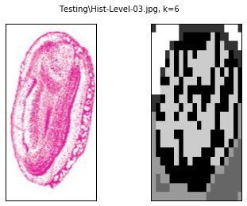
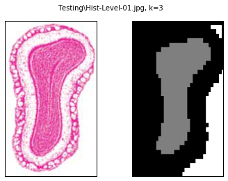
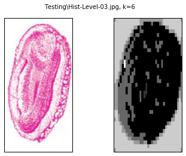

In [17]: runfile('C:/Users/xeroj/Downloads/V/Computer Vision/Lab5/lab5.py', wdir='C:/Users/xeroj/Downloads/V/Computer Vision/Lab5')
Reloaded modules: lib_ncut
Processing: Testing\Hist-Level-01.jpg
Processing took 0.985 s
Processing: Testing\Hist-Level-02.jpg
Processing took 0.984 s
Processing: Testing\Hist-Level-03.jpg
Processing took 0.982 s
Processing: Testing\Hist-Level-04.jpg
Processing took 0.971 s
Program ran for 3.924 s
In [18]: runfile('C:/Users/xeroj/Downloads/V/Computer Vision/Lab5/lab5.py', wdir='C:/Users/xeroj/Downloads/V/Computer Vision/Lab5')
Reloaded modules: lib_ncut
Processing: Testing\Hist-Level-01.jpg
Processing took 1.003 s
Processing: Testing\Hist-Level-02.jpg
Processing took 0.990 s
Processing: Testing\Hist-Level-03.jpg
Processing took 0.964 s
Processing: Testing\Hist-Level-04.jpg
Processing took 0.955 s
Program ran for 3.913 s
In [19]: runfile('C:/Users/xeroj/Downloads/V/Computer Vision/Lab5/lab5.py', wdir='C:/Users/xeroj/Downloads/V/Computer Vision/Lab5')
Reloaded modules: lib_ncut
Processing: Testing\Hist-Level-01.jpg
Processing took 0.977 s
Processing: Testing\Hist-Level-02.jpg
Processing took 0.970 s
Processing: Testing\Hist-Level-03.jpg
Processing took 1.055 s
Processing: Testing\Hist-Level-04.jpg
Processing took 0.958 s
Program ran for 3.963 s
In [20]: runfile('C:/Users/xeroj/Downloads/V/Computer Vision/Lab5/lab5.py', wdir='C:/Users/xeroj/Downloads/V/Computer Vision/Lab5')
Reloaded modules: lib_ncut
Processing: Testing\Hist-Level-01.jpg
Processing took 0.984 s
Processing: Testing\Hist-Level-02.jpg
Processing took 0.981 s
Processing: Testing\Hist-Level-03.jpg
Processing took 0.961 s
Processing: Testing\Hist-Level-04.jpg
Processing took 0.958 s
Program ran for 3.887 s
In [21]: runfile('C:/Users/xeroj/Downloads/V/Computer Vision/Lab5/lab5.py', wdir='C:/Users/xeroj/Downloads/V/Computer Vision/Lab5')
Reloaded modules: lib_ncut
Processing: Testing\Hist-Level-01.jpg
Processing took 1.104 s
Processing: Testing\Hist-Level-02.jpg
Processing took 1.094 s
Processing: Testing\Hist-Level-03.jpg
Processing took 1.073 s
Processing: Testing\Hist-Level-04.jpg
Processing took 1.087 s
Program ran for 4.360 s
In [22]: runfile('C:/Users/xeroj/Downloads/V/Computer Vision/Lab5/lab5.py', wdir='C:/Users/xeroj/Downloads/V/Computer Vision/Lab5')
Reloaded modules: lib_ncut
Processing: Testing\Hist-Level-01.jpg
Processing took 1.112 s
Processing: Testing\Hist-Level-02.jpg
Processing took 1.164 s
Processing: Testing\Hist-Level-03.jpg
Processing took 1.095 s
Processing: Testing\Hist-Level-04.jpg
Processing took 1.113 s
Program ran for 4.486 s

In [23]: runfile('C:/Users/xeroj/Downloads/V/Computer Vision/Lab5/lab5.py', wdir='C:/Users/xeroj/Downloads/V/Computer Vision/Lab5')
Reloaded modules: lib_ncut
Processing: Testing\Hist-Level-01.jpg
Processing took 57.181 s
Processing: Testing\Hist-Level-02.jpg
Processing took 64.682 s
Processing: Testing\Hist-Level-03.jpg
Processing took 62.778 s
Processing: Testing\Hist-Level-04.jpg
Processing took 60.416 s
Program ran for 245.059 s
In [24]: runfile('C:/Users/xeroj/Downloads/V/Computer Vision/Lab5/lab5.py', wdir='C:/Users/xeroj/Downloads/V/Computer Vision/Lab5')
Reloaded modules: lib_ncut
Program ran for 0.000 s
In [25]: runfile('C:/Users/xeroj/Downloads/V/Computer Vision/Lab5/lab5.py', wdir='C:/Users/xeroj/Downloads/V/Computer Vision/Lab5')
Reloaded modules: lib_ncut
Program ran for 0.000 s
In [26]: runfile('C:/Users/xeroj/Downloads/V/Computer Vision/Lab5/lab5.py', wdir='C:/Users/xeroj/Downloads/V/Computer Vision/Lab5')
Reloaded modules: lib_ncut
Processing: Testing\Hist-Level-01.jpg
Processing took 11.394 s
Program ran for 11.395 s
In [27]:
runfile('C:/Users/xeroj/Downloads/V/Computer Vision/Lab5/lab5.py', wdir='C:/Users/xeroj/Downloads/V/Computer Vision/Lab5')
Reloaded modules: lib_ncut
Processing: Testing\Hist-Level-01.jpg
Processing took 11.286 s
Program ran for 11.286 s
In [28]: runfile('C:/Users/xeroj/Downloads/V/Computer Vision/Lab5/lab5.py', wdir='C:/Users/xeroj/Downloads/V/Computer Vision/Lab5')
Reloaded modules: lib_ncut
Processing: Testing\Hist-Level-01.jpg
Traceback (most recent call last):
File "<ipython-input-28-39cd28a4dcb8>", line 1, in <module>
runfile('C:/Users/xeroj/Downloads/V/Computer Vision/Lab5/lab5.py', wdir='C:/Users/xeroj/Downloads/V/Computer Vision/Lab5')
File "C:\Users\xeroj\Desktop\Local Programming\Anaconda2\lib\site-packages\spyder\utils\site\sitecustomize.py", line 866, in runfile
execfile(filename, namespace)
File "C:\Users\xeroj\Desktop\Local Programming\Anaconda2\lib\site-packages\spyder\utils\site\sitecustomize.py", line 87, in execfile
exec(compile(scripttext, filename, 'exec'), glob, loc)
File "C:/Users/xeroj/Downloads/V/Computer Vision/Lab5/lab5.py", line 45, in <module>
im_atlas = np.array(Image.open(atlas_path))
File "C:\Users\xeroj\Desktop\Local Programming\Anaconda2\lib\site-packages\PIL\Image.py", line 2280, in open
fp = builtins.open(filename, "rb")
IOError: [Errno 2] No such file or directory: 'Testing\\Complete-Atlas-Level-01.jpg'
In [29]: runfile('C:/Users/xeroj/Downloads/V/Computer Vision/Lab5/lab5.py', wdir='C:/Users/xeroj/Downloads/V/Computer Vision/Lab5')
Reloaded modules: lib_ncut
Processing: Testing\Hist-Level-01.jpg
Processing took 11.149 s
Program ran for 11.149 s
In [30]:
runfile('C:/Users/xeroj/Downloads/V/Computer Vision/Lab5/lab5.py', wdir='C:/Users/xeroj/Downloads/V/Computer Vision/Lab5')
Reloaded modules: lib_ncut
Processing: Testing\Hist-Level-01.jpg
Processing took 11.703 s
Program ran for 11.704 s
In [31]:
runfile('C:/Users/xeroj/Downloads/V/Computer Vision/Lab5/lab5.py', wdir='C:/Users/xeroj/Downloads/V/Computer Vision/Lab5')
Reloaded modules: lib_ncut
Processing: Testing\Hist-Level-01.jpg
Processing took 10.871 s
Program ran for 10.872 s
In [32]:
runfile('C:/Users/xeroj/Downloads/V/Computer Vision/Lab5/lab5.py', wdir='C:/Users/xeroj/Downloads/V/Computer Vision/Lab5')
Reloaded modules: lib_ncut
Processing: Testing\Hist-Level-01.jpg
Processing took 12.225 s
Program ran for 12.226 s
In [33]:
runfile('C:/Users/xeroj/Downloads/V/Computer Vision/Lab5/lab5.py', wdir='C:/Users/xeroj/Downloads/V/Computer Vision/Lab5')
Reloaded modules: lib_ncut
Processing: Testing\Hist-Level-01.jpg
Processing took 11.406 s
Program ran for 11.406 s
In [34]:
runfile('C:/Users/xeroj/Downloads/V/Computer Vision/Lab5/lab5.py', wdir='C:/Users/xeroj/Downloads/V/Computer Vision/Lab5')
Reloaded modules: lib_ncut
Processing: Testing\Hist-Level-01.jpg
Processing took 11.027 s
Program ran for 11.027 s
In [35]:
runfile('C:/Users/xeroj/Downloads/V/Computer Vision/Lab5/lab5.py', wdir='C:/Users/xeroj/Downloads/V/Computer Vision/Lab5')
Reloaded modules: lib_ncut
Processing: Testing\Hist-Level-01.jpg
Processing took 9.972 s
Program ran for 9.972 s
In [36]: runfile('C:/Users/xeroj/Downloads/V/Computer Vision/Lab5/lab5.py', wdir='C:/Users/xeroj/Downloads/V/Computer Vision/Lab5')
Reloaded modules: lib_ncut
Processing: Testing\Hist-Level-01.jpg
Processing took 9.819 s
Program ran for 9.819 s
In [37]:
runfile('C:/Users/xeroj/Downloads/V/Computer Vision/Lab5/lab5.py', wdir='C:/Users/xeroj/Downloads/V/Computer Vision/Lab5')
Reloaded modules: lib_ncut
Processing: Testing\Hist-Level-01.jpg
Processing took 9.766 s
Program ran for 9.767 s
In [38]:
runfile('C:/Users/xeroj/Downloads/V/Computer Vision/Lab5/lab5.py', wdir='C:/Users/xeroj/Downloads/V/Computer Vision/Lab5')
Reloaded modules: lib_ncut
Processing: Testing\Hist-Level-01.jpg
Processing took 10.691 s
Program ran for 10.691 s
In [39]: runfile('C:/Users/xeroj/Downloads/V/Computer Vision/Lab5/lab5.py', wdir='C:/Users/xeroj/Downloads/V/Computer Vision/Lab5')
Reloaded modules: lib_ncut
Processing: Testing\Hist-Level-01.jpg
Processing took 9.654 s
Program ran for 9.654 s
In [40]:

runfile('C:/Users/xeroj/Downloads/V/Computer Vision/Lab5/lab5.py', wdir='C:/Users/xeroj/Downloads/V/Computer Vision/Lab5')
Reloaded modules: lib_ncut
Processing: Testing\Hist-Level-01.jpg
Processing took 10.429 s
Program ran for 10.429 s
In [41]: runfile('C:/Users/xeroj/Downloads/V/Computer Vision/Lab5/lab5.py', wdir='C:/Users/xeroj/Downloads/V/Computer Vision/Lab5')
Reloaded modules: lib_ncut
Processing: Testing\Hist-Level-01.jpg
Processing took 10.456 s
Processing: Testing\Hist-Level-02.jpg
Processing took 10.277 s
Processing: Testing\Hist-Level-03.jpg
Processing took 10.237 s
Processing: Testing\Hist-Level-04.jpg
Processing took 9.902 s
Processing: Testing\Hist-Level-05.jpg
Traceback (most recent call last):
File "<ipython-input-41-39cd28a4dcb8>", line 1, in <module>
runfile('C:/Users/xeroj/Downloads/V/Computer Vision/Lab5/lab5.py', wdir='C:/Users/xeroj/Downloads/V/Computer Vision/Lab5')
File "C:\Users\xeroj\Desktop\Local Programming\Anaconda2\lib\site-packages\spyder\utils\site\sitecustomize.py", line 866, in runfile
execfile(filename, namespace)
File "C:\Users\xeroj\Desktop\Local Programming\Anaconda2\lib\site-packages\spyder\utils\site\sitecustomize.py", line 87, in execfile
exec(compile(scripttext, filename, 'exec'), glob, loc)
File "C:/Users/xeroj/Downloads/V/Computer Vision/Lab5/lab5.py", line 56, in <module>
code, V = cluster(A,k=K[index],ndim=3)
IndexError: index 5 is out of bounds for axis 0 with size 5
In [42]: runfile('C:/Users/xeroj/Downloads/V/Computer Vision/Lab5/lab5.py', wdir='C:/Users/xeroj/Downloads/V/Computer Vision/Lab5')
Reloaded modules: lib_ncut
Processing: Testing\Hist-Level-01.jpg
Processing took 9.877 s
Processing: Testing\Hist-Level-02.jpg
Processing took 10.344 s
Processing: Testing\Hist-Level-03.jpg
Processing took 10.367 s
Processing: Testing\Hist-Level-04.jpg
Processing took 9.937 s
Processing: Testing\Hist-Level-05.jpg


Traceback (most recent call last):
File "<ipython-input-42-39cd28a4dcb8>", line 1, in <module>
runfile('C:/Users/xeroj/Downloads/V/Computer Vision/Lab5/lab5.py', wdir='C:/Users/xeroj/Downloads/V/Computer Vision/Lab5')
File "C:\Users\xeroj\Desktop\Local Programming\Anaconda2\lib\site-packages\spyder\utils\site\sitecustomize.py", line 866, in runfile
execfile(filename, namespace)
File "C:\Users\xeroj\Desktop\Local Programming\Anaconda2\lib\site-packages\spyder\utils\site\sitecustomize.py", line 87, in execfile
exec(compile(scripttext, filename, 'exec'), glob, loc)
File "C:/Users/xeroj/Downloads/V/Computer Vision/Lab5/lab5.py", line 56, in <module>
code, V = cluster(A,k=K[index],ndim=3)
IndexError: index 5 is out of bounds for axis 0 with size 5
In [43]:
runfile('C:/Users/xeroj/Downloads/V/Computer Vision/Lab5/lab5.py', wdir='C:/Users/xeroj/Downloads/V/Computer Vision/Lab5')
Reloaded modules: lib_ncut
Processing: Testing\Hist-Level-01.jpg
ERROR: execution aborted
In [44]: runfile('C:/Users/xeroj/Downloads/V/Computer Vision/Lab5/lab5.py', wdir='C:/Users/xeroj/Downloads/V/Computer Vision/Lab5')
Reloaded modules: lib_ncut
Processing: Testing\Hist-Level-01.jpg
Processing took 10.387 s
Processing: Testing\Hist-Level-02.jpg
Processing took 10.649 s
Processing: Testing\Hist-Level-03.jpg
Processing took 10.251 s
Processing: Testing\Hist-Level-04.jpg
Processing took 10.279 s
Program ran for 41.567 s
In [45]:

runfile('C:/Users/xeroj/Downloads/V/Computer Vision/Lab5/lab5.py', wdir='C:/Users/xeroj/Downloads/V/Computer Vision/Lab5')
Reloaded modules: lib_ncut
Processing: Testing\Hist-Level-01.jpg
Processing took 9.748 s
Processing: Testing\Hist-Level-02.jpg
Processing took 9.829 s
Processing: Testing\Hist-Level-03.jpg
Processing took 10.149 s
Processing: Testing\Hist-Level-04.jpg
Processing took 10.532 s
Program ran for 40.259 s


In [46]:

runfile('C:/Users/xeroj/Downloads/V/Computer Vision/Lab5/lab5.py', wdir='C:/Users/xeroj/Downloads/V/Computer Vision/Lab5')
Reloaded modules: lib_ncut
Processing: Testing\Hist-Level-01.jpg
Processing took 18.051 s
Processing: Testing\Hist-Level-02.jpg
Processing took 18.889 s
Processing: Testing\Hist-Level-03.jpg
Processing took 19.700 s
Processing: Testing\Hist-Level-04.jpg
Processing took 21.990 s
Program ran for 78.631 s


In [46]:

In [47]: runfile('C:/Users/xeroj/Downloads/V/Computer Vision/Lab5/lab5.py', wdir='C:/Users/xeroj/Downloads/V/Computer Vision/Lab5')
Reloaded modules: lib_ncut
Processing: Testing\Hist-Level-01.jpg
ERROR: execution aborted
In [48]: runfile('C:/Users/xeroj/Downloads/V/Computer Vision/Lab5/lab5.py', wdir='C:/Users/xeroj/Downloads/V/Computer Vision/Lab5')
Reloaded modules: lib_ncut
Processing: Testing\Hist-Level-01.jpg
Reloaded modules: lib_ncut
Processing: Testing\Hist-Level-01.jpg
ERROR: execution aborted
In [49]: runfile('C:/Users/xeroj/Downloads/V/Computer Vision/Lab5/lab5.py', wdir='C:/Users/xeroj/Downloads/V/Computer Vision/Lab5')ERROR: execution aborted
In [50]: runfile('C:/Users/xeroj/Downloads/V/Computer Vision/Lab5/lab5.py', wdir='C:/Users/xeroj/Downloads/V/Computer Vision/Lab5')
Reloaded modules: lib_ncut
Processing: Testing\Hist-Level-01.jpg
Processing took 10.392 s
Processing: Testing\Hist-Level-02.jpg
Processing took 10.348 s
Processing: Testing\Hist-Level-03.jpg
Processing took 10.502 s
Processing: Testing\Hist-Level-04.jpg
Processing took 11.538 s
Processing: Testing\Hist-Level-05.jpg
Processing took 10.457 s
Processing: Testing\Hist-Level-06.jpg
Processing took 9.625 s
Processing: Testing\Hist-Level-07.jpg
Processing took 9.554 s
Processing: Testing\Hist-Level-08.jpg
Processing took 10.137 s
Processing: Testing\Hist-Level-09.jpg
Processing took 9.981 s
Processing: Testing\Hist-Level-10.jpg
Processing took 10.059 s
Processing: Testing\Hist-Level-11.jpg
Processing took 9.701 s
Processing: Testing\Hist-Level-12.jpg
Processing took 9.752 s
Processing: Testing\Hist-Level-13.jpg
Processing took 10.221 s
Processing: Testing\Hist-Level-14.jpg
Processing took 10.148 s
Program ran for 142.420 s


In [51]: